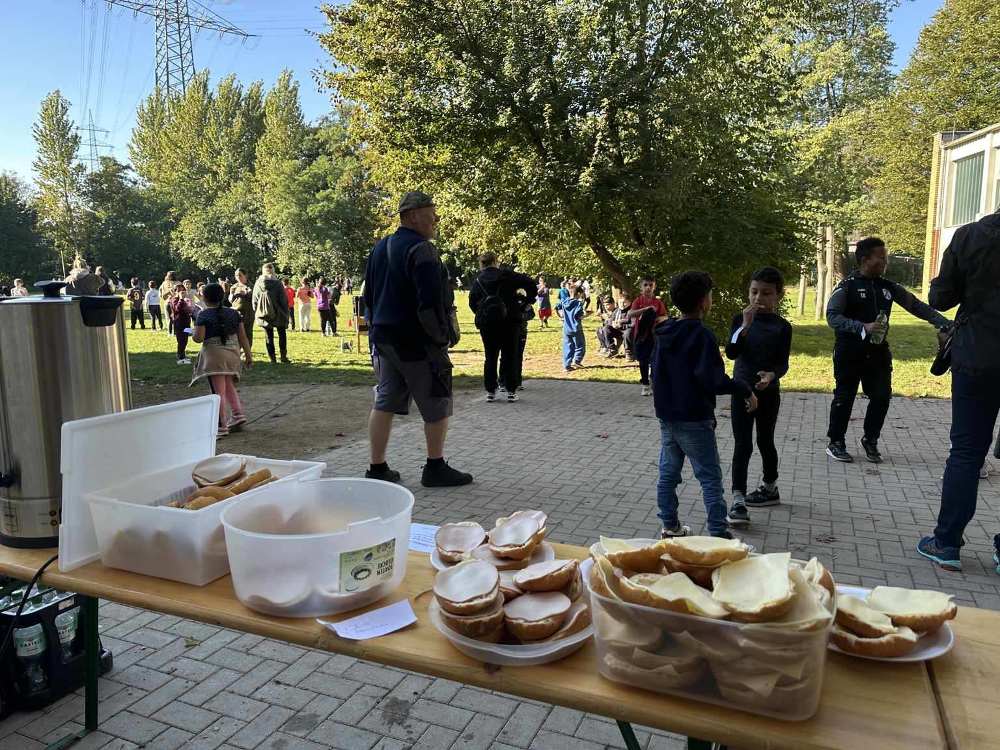

Kultur & Kreativität
Theateraufführungen, Kunstprojekte sowie Musik- und Sprechförderung.
Förderverein der Großenbruchschule Essen e.V.
Wir unterstützen die Kinder der Großenbruchschule mit zusätzlichen Bildungs-, Förder- und Gemeinschaftsangeboten, die über das reguläre Schulbudget hinausgehen.
Schon ab 12 € Mindestbeitrag pro Schuljahr. Die Beitrittserklärung kann direkt am PC, Tablet oder Handy ausgefüllt werden.
Warum ein Förderverein?
Der Förderverein ist eine wichtige Säule, um den Schülerinnen und Schülern der Großenbruchschule zusätzliche Bildungs- und Fördermöglichkeiten zu bieten.
Mit Mitgliedsbeiträgen, Spenden und persönlichem Engagement finanzieren und unterstützen wir Projekte, die den Schulalltag bereichern und das Gemeinschaftsgefühl stärken.
Das machen wir möglich
Unsere Unterstützung kommt dort an, wo sie den Schulalltag und die Entwicklung der Kinder konkret bereichert.
Theateraufführungen, Kunstprojekte sowie Musik- und Sprechförderung.
Sportförderung und Projekte wie das Fußballfeld schaffen Raum für Bewegung.
Schulhof-, Pausen- und Eingangsgestaltung machen die Schule noch einladender.
Schulfeste, Ausflüge und Events stärken das Miteinander der Schulgemeinschaft.
Aktivitäten 2025/2026
Mit Beiträgen, Spenden und persönlichem Einsatz konnten wir bereits mehrere konkrete Aktionen für die Schulgemeinschaft unterstützen.

Beim Spendenlauf hat der Förderverein alle Teilnehmerinnen und Teilnehmer mit belegten Brötchen unterstützt.
Für Veranstaltungen und gemeinsame Aktionen an der Schule haben wir eine Popcornmaschine angeschafft.
Beim Schulfest hat der Förderverein einen eigenen Grillstand organisiert und damit zum gemeinsamen Fest beigetragen.
Beide Abschlussklassen erhielten einen finanziellen Beitrag des Fördervereins für eine kleine gemeinsame Feier.
So können Sie helfen
Unterstützen Sie unsere Arbeit dauerhaft mit einem Mindestbeitrag von 12 € pro Schuljahr.
Beitrittserklärung 2026/2027Ausgefüllt per E-Mail an foerderverein@grossenbruchschule.de senden oder bei der Klassenlehrerin abgeben.
Auch ohne Mitgliedschaft können Sie unsere Projekte direkt unterstützen.
Helfen Sie bei Veranstaltungen oder Projekten mit. Ideen und tatkräftige Unterstützung sind herzlich willkommen.
Kontakt aufnehmen →Downloads
Hier können Sie unsere aktuellen Unterlagen direkt herunterladen.
Aktueller Antrag auf Mitgliedschaft im Förderverein.
PDF herunterladenUnsere Vereinsinformationen kompakt in einer PDF.
Flyer herunterladenGemeinsam für die Großenbruchschule
Kontakt
Bei Fragen zur Mitgliedschaft, zu Spenden oder wenn Sie sich aktiv einbringen möchten, sprechen Sie uns gerne an.